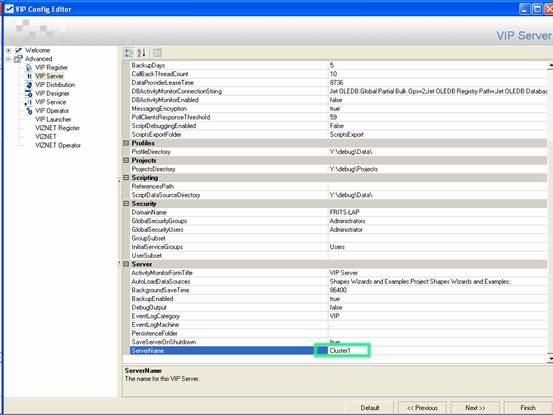
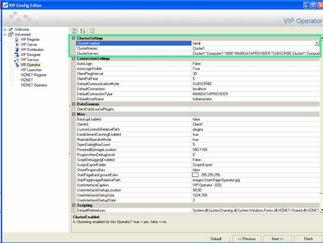

SmartUI Servers should be clustered to provide:
Redundancy is achieved by ensuring that each of the SmartUI Servers in the cluster has exactly the same project data source files as well as configuration files. In other words, it is necessary to configure one Server within the cluster and then duplicate its settings to all the others.
Note: Any number of Servers can belong to the same cluster.
Load balancing is achieved by ensuring that each of the SmartUI Operators (that use the Servers in this cluster) provide the connection settings of all the Servers in the cluster. In other words, it is necessary to configure one Operator and duplicate its settings to all the others.
Each SmartUI Server uses UDP broadcasts to inform its cluster aware Operators of its availability and load. The load of each Server is determined by the number of SmartUI Clients that are currently connected to it. Each cluster aware Operator maintains a list of Servers for ALL the clusters that it connects to. The list is periodically updated by the SmartUI Operator, which obtains the availability and load of these Servers from their broadcasts. Cluster aware Operators automatically switch over to the Server with the lightest load.
Upon login, if the default Server (cluster partner) is NOT available then a cluster aware Operator will search for an available cluster partner.
Note: Clustered Servers currently ONLY share the workload generated by their Operator clients.
The following procedure is recommended to cluster multiple Servers together:
IMPORTANT: The

Figure 1: Locating the ServerName property for a SmartUI Server
IMPORTANT: If you CHANGE this setting for a Server then you need to change the BroadcastPortRange setting of each Client that you want to receive these broadcasts from this Server.

Figure 2 : Locating the Cluster Settings group of properties for a SmartUI Operator
Cluster1~Computer1~9000~MAINDATAPROVIDER~SUBSCRIBE;
Cluster1~Computer2~9000~MAINDATAPROVIDER~SUBSCRIBE;
Cluster1~Computer3~9000~MAINDATAPROVIDER~SUBSCRIBE
However, if all the Servers that form part of this cluster existed on the Internet, and more specifically on three computers with the following IP addresses– 201.201.201.1, 201.201.201.2 and 201.201.201.3. Then this ClusterServers setting will appear as follows:
Cluster1~http://201.201.201.1~80~WEBSERVICEDATAPROVIDER~SUBSCRIBE_POLL; Cluster1~http://201.201.201.2~80~WEBSERVICEDATAPROVIDER~SUBSCRIBE_POLL; Cluster1~http://201.201.201.3~80~WEBSERVICEDATAPROVIDER~SUBSCRIBE_POLL
Note: This is possible since these SmartUI Operator clients connect to a single cluster. However, if different Operators are required to connect to different clusters, it may be necessary to manually configure their configuration files individually, depending upon the complexity required.
When configuring load balancing, it is often useful to group the SmartUI Operators that connect to a cluster into more than one set. Then modify the ClusterServers setting for each of these sets, so that the order in which they connect to the Servers within the cluster differ.
For example, if we have three sets of SmartUI Operators that need to connect to this cluster, then each of their CONFIG files could be configured with three different ClusterServers settings. In this way each SmartUI Operator in the three different sets connects to a different SmartUI Server on start up. For instance:
Set 1
Cluster1~Computer1~9000~MAINDATAPROVIDER~SUBSCRIBE; Cluster1~Computer2~9000~MAINDATAPROVIDER~SUBSCRIBE; Cluster1~Computer3~9000~MAINDATAPROVIDER~SUBSCRIBE
Set 2
Cluster1~Computer2~9000~MAINDATAPROVIDER~SUBSCRIBE; Cluster1~Computer3~9000~MAINDATAPROVIDER~SUBSCRIBE; Cluster1~Computer1~9000~MAINDATAPROVIDER~SUBSCRIBE
Set 3
Cluster1~Computer3~9000~MAINDATAPROVIDER~SUBSCRIBE; Cluster1~Computer1~9000~MAINDATAPROVIDER~SUBSCRIBE; Cluster1~Computer2~9000~MAINDATAPROVIDER~SUBSCRIBE
The INITIAL connection for the SmartUI Operator MUST have a running SmartUI Server. In other words, if a SmartUI Operator is configured to connect to the SmartUI Server on Computer3, this SmartUI Server MUST be running, otherwise the initial log on of this SmartUI Operator will fail. From then on if this SmartUI Server fails, this SmartUI Operator will hunt until it finds an active connection.
The speed at which this occurs is determined by its switch-over time. This switch-over time is the time taken for a SmartUI Operator to become aware that its current connection has failed and to search for and connect to another SmartUI Server. This is configured by the ClientPingInterval setting of the SmartUI Operator, which is grouped under the ConnectionSettings in the SmartUI Operator.exe.config file.
The ClientPingInterval setting determines how often the SmartUI Operator will query the Server for an active connection and its configuration has the following effect upon the performance of the Operator:
A ping interval between 5 and 10 seconds should suffice for most cluster configurations.